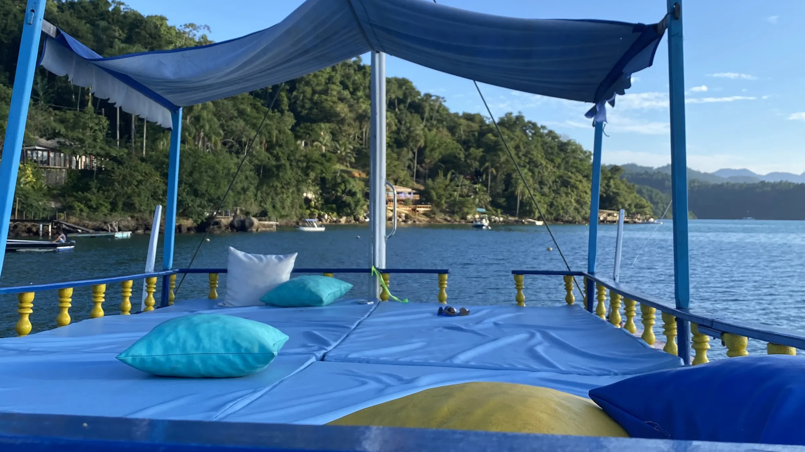
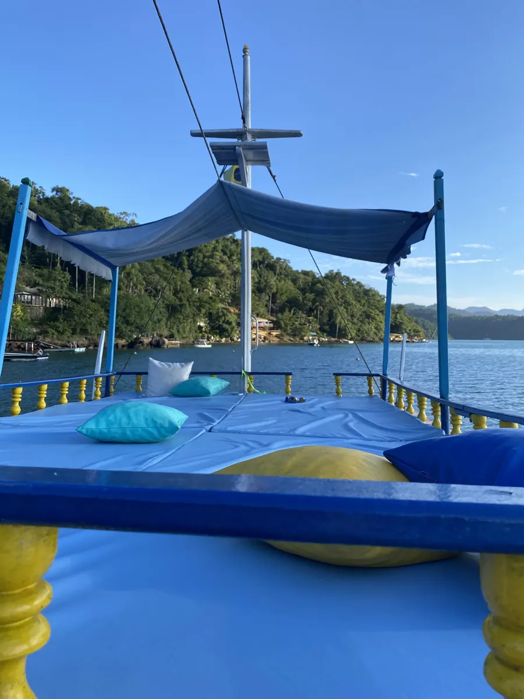
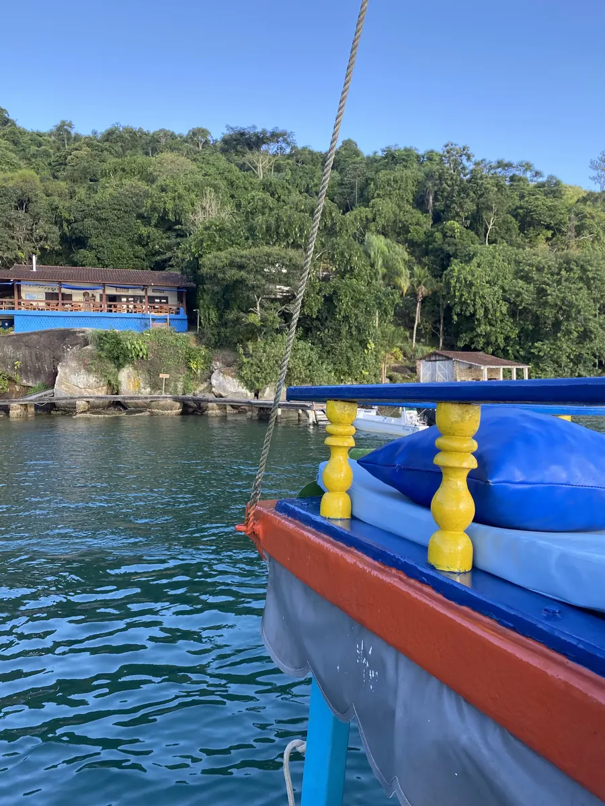
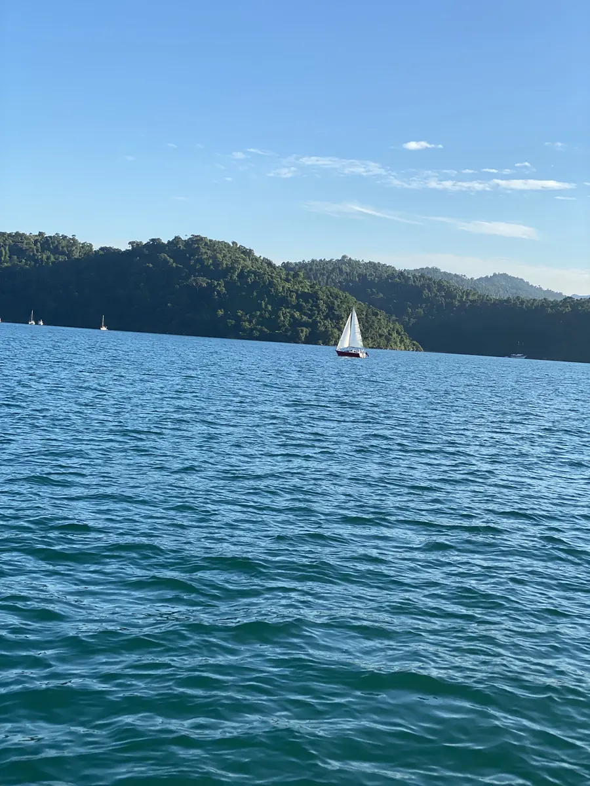
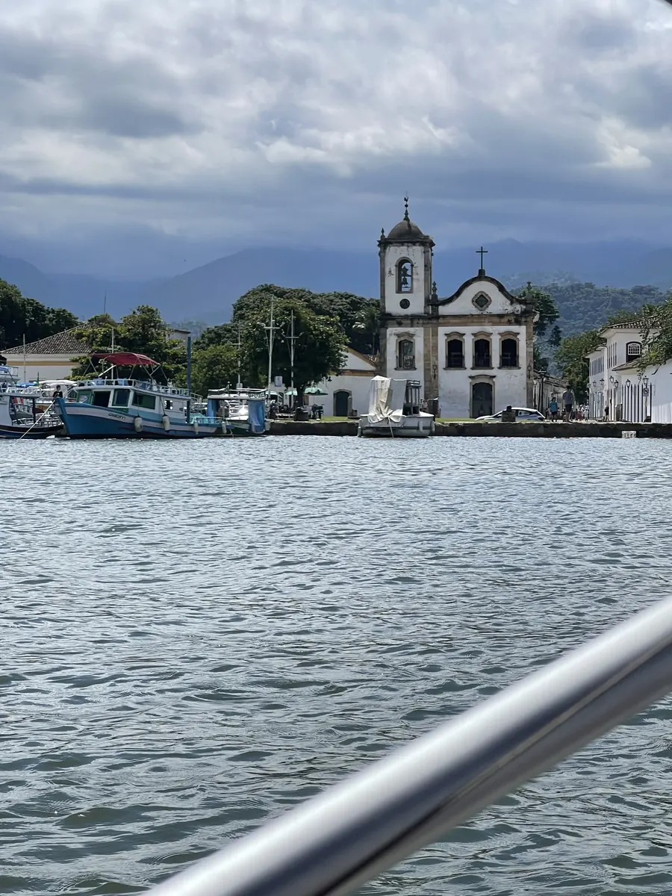

Cais de Paraty · Centro Histórico
Passeios debarco em Paraty
Saída do Cais do Centro Histórico, pela Baía de Paraty.
O passeio
Um barco para o seu grupo
Fotos reais do barco e da baía.




✓Banheiro a bordo
✓Opção de churrasco
✓Barril de Heineken a bordo
✓Passeio privativo
✓Caipirinha do Sandrinho
✓História de Paraty contada na rota
Itens citados em avaliações de clientes no Google. Confirme a disponibilidade no WhatsApp.
Roteiros
Saindo do Cais Histórico
Toque em um ponto e veja o barco seguir a rota.
Esquema ilustrativo, fora de escala. Os trajetos reais são combinados com a equipe.
Roteiro selecionado
Ilha Comprida
Quero este roteiroQuem foi, recomenda
5,0 no Google
★★★★★“As paisagens são incríveis e o barco tem tudo que precisamos!”
Laís F., avaliação no Google
★★★★★“A caipirinha do Sandrinho é divina, vale a pena experimentar.”
Catharina H., avaliação no Google
★★★★★“Passeio privativo maravilhoso por paisagens lindas e águas cristalinas.”
Avaliação no Google
Trechos de avaliações públicas. Ver todas no Google Maps
Reservar
Monte seu passeio
Escolha e a mensagem sai pronta no WhatsApp.
1 · Roteiro
2 · Tipo de passeio
3 · Quantas pessoas?
4 · Turno
Data desejada (opcional)
Seu nome (opcional)
Contato